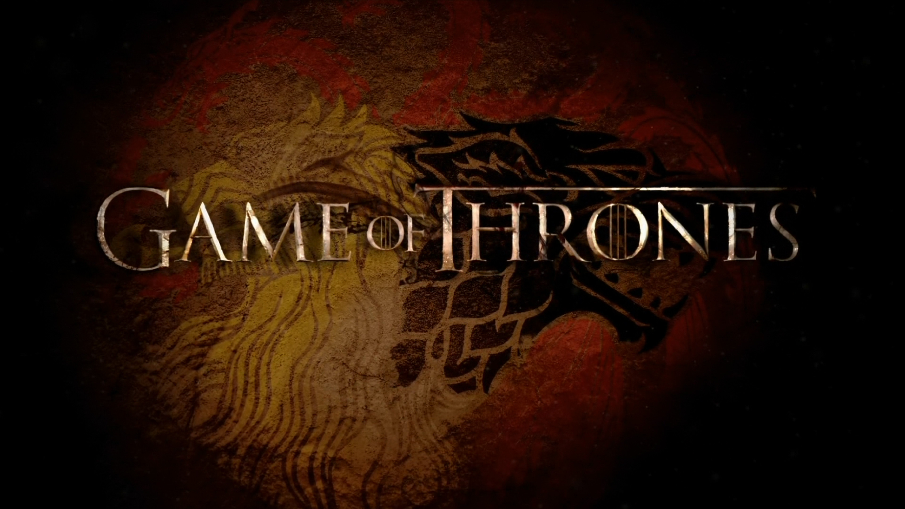
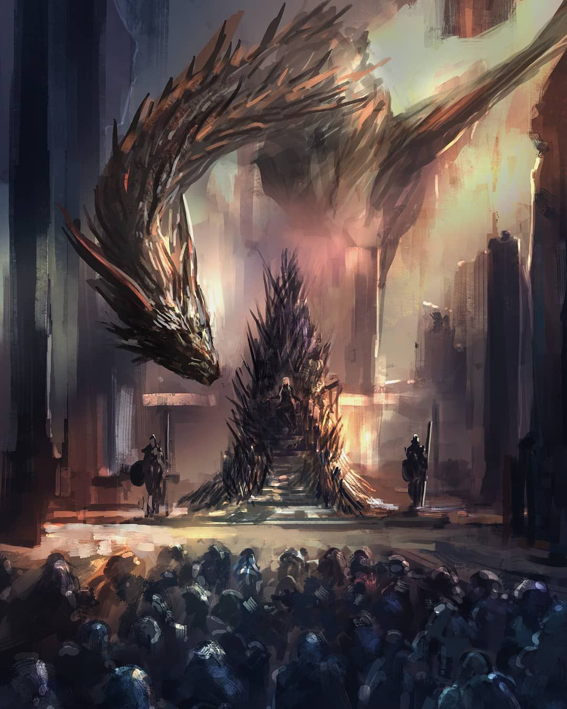

An in Depth Overview of The Game of Thrones Roster
Breaking Down Personality, Beliefs, Season Highlights, etc.
Across the 8 Seasons of GOT © 2011, and the many books I have not read but know tidbits from, there is an expansive system of beliefs, morals, hierarchies, religons, and personality types. From your typical nice guys (Pod the Man), to the most insidious characters you can't wait to see be killed off (Joffrey), GOT has it all and more.
Watching this beautiful mastercraft of a show is like watching the most intense season of survivor and never knowing who will be the next to go. Anytime you start to feel connected to a character, you know it's likely not long until they are no more. But the emotionl roller coaster is what, in my opinion makes it such an enjoyable watch. You see such a display of character archetypes at work and you begin to wonder if you ever understood where this story was about to take you. By the end you're exhausted and defeated and even if it ended in your favor you can't help but feel like you still lost in some ways.
Let's Get Into It - Who Would Win a Spot in Top 4?
This is just a small intro not necessarily ranked in order, based on traits that are admirable and can be respected in almost all scenarios, making it slightly hard to chose. With a few coming immediatley to mind and others having to weigh out and think about. That being said:
- Ned Stark
- Ser Davos Seaworth
- Jon Snow
- Samwell Tarly
The legend, Ned Stark. Died with honor, protected Jon until the end, and raised his kids to become some of the coolest characters in the show.
Somehow survied the whole show. Gave critical guidance, always tried to be on the right side of history, loved Shireen like his own daughter, and how could I not include the Onion Knight.
Not to glaze, but this character is just written to be likeable. Honor and loyalty traits maxed out. Aura is maxed. Died and came back to life, lead multiple armies, united foe and friends alike, slaughtered people on the battlefield. I mean come on.
Samwell might not be the strongest, but by god he fought when he needed too and succeded. He killed a white walker, he found the dragon glass, he protected Gilly and little Sam, he stuck by Jon no matter what. 10/10 Man.
Honroable Mentions: Tyrion Lannister, Arya Stark, Brienne of Tarth, Podrick Payne, Greyworm
